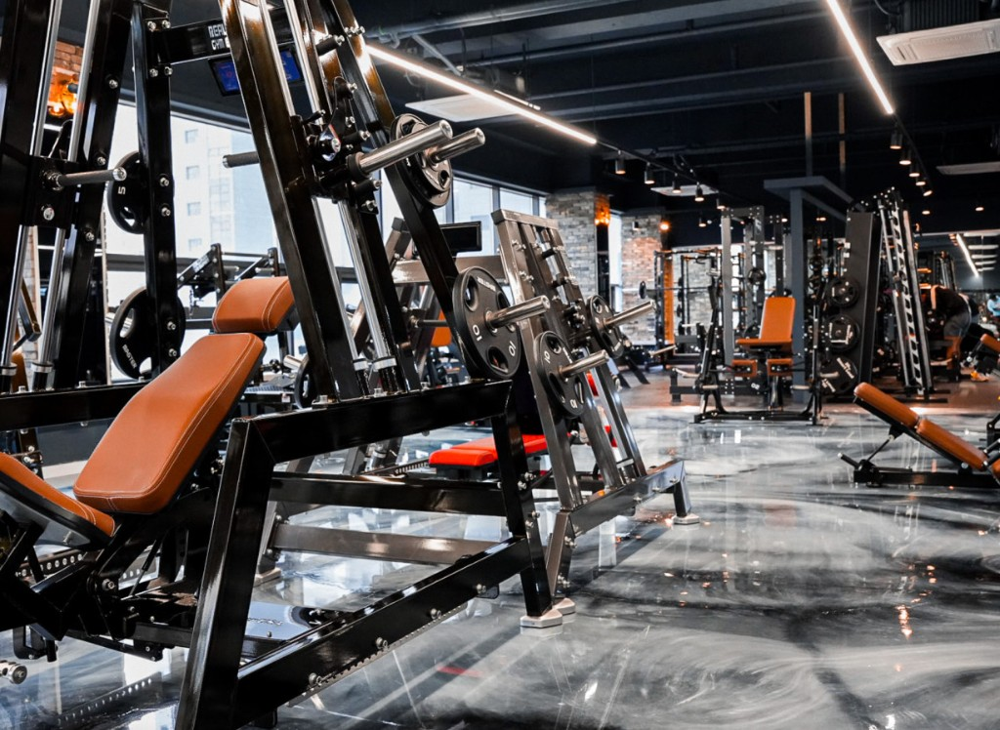

타임 피트니스
나의 운동 캘린더
⚙
주
월
‹
오늘
›
● 개인운동
● PT
×
메모 저장
운동 추가 / 편집
×
운동 구분
개인운동
PT
운동 분류
전체 보기
상체
하체
기타
운동명
등록된 운동 없음
＋ 운동명 추가
수정
삭제
운동 분류
상체
하체
기타
운동명
취소
저장
무게 · kg
횟수
세트
＋ 운동 추가
수정 취소
등록한 운동
0
저장
설정
×
데이터 보관
운동 기록, 메모, 분류별 운동 목록을
파일 하나에 보관합니다.
전체 백업
백업 파일 저장
가져오기
저장한 백업 파일 선택
가져올 데이터
현재 저장된 전체 데이터를 교체합니다.
취소
가져오기
휴대폰을 바꿀 때 백업 파일을 옮겨 가져오세요.

타임 피트니스
오늘의 운동, 나의 시간.